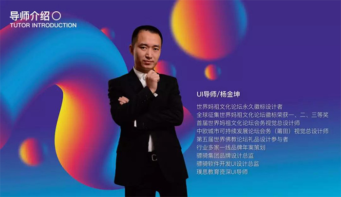

10月22日下午，由璞思教育和湄洲湾职业技术学院（湄职院）的信息工程学院联合举办的以“5步缔造顶尖UI设计师”为主题的公开课在湄职院如期举行。
小思：您如何看待UI设计行业？未来发展前景如何？
杨老师：UI设计是一个非常关注用户体验、注重产品思维、审美等的综合设计领域。随着技术领域的逐步发展，企业与个人都只会越来越关注交互体验，注重个性化需求的满足，因此UI的需求只会越来越多，发展前景也不言而喻，5G时代，我们身边很多的物品都将可能拥有显示画面的显示屏，那么相应的就需要大量的UI设计工作，所以UI设计未来的发展前景是相当可观的。当然，与此同时，对UI设计师的要求也会越来越高。